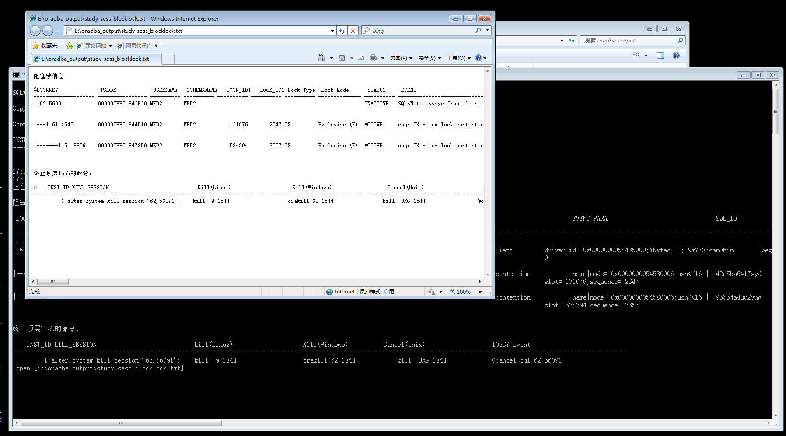
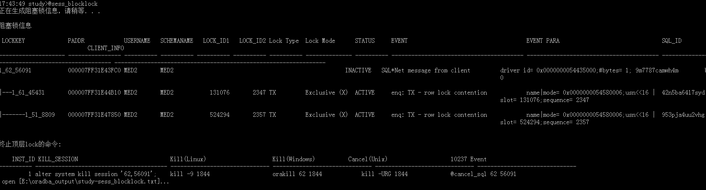
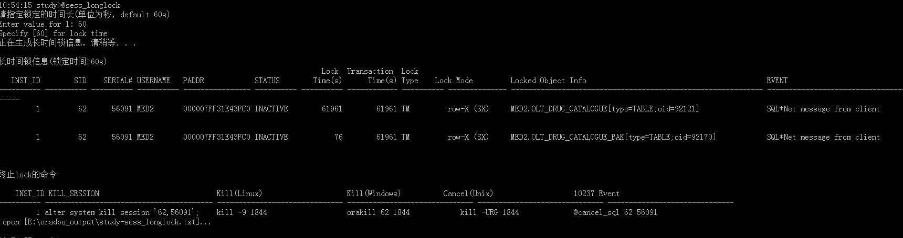
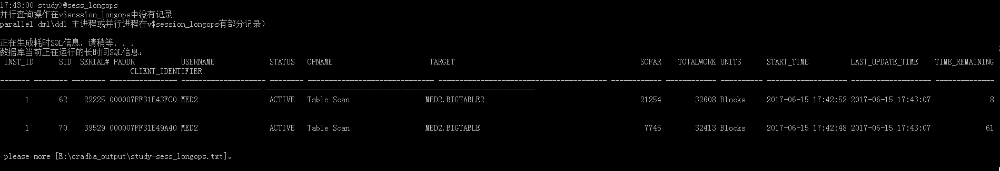
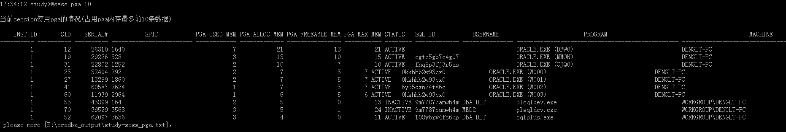
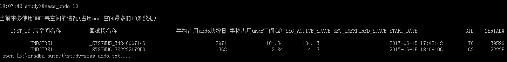
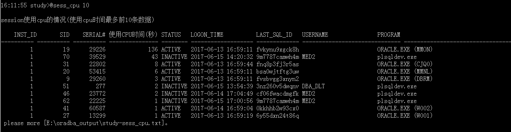
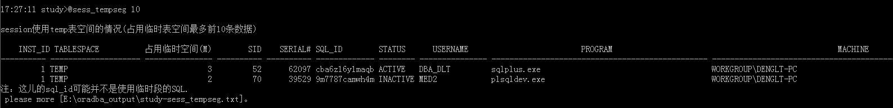
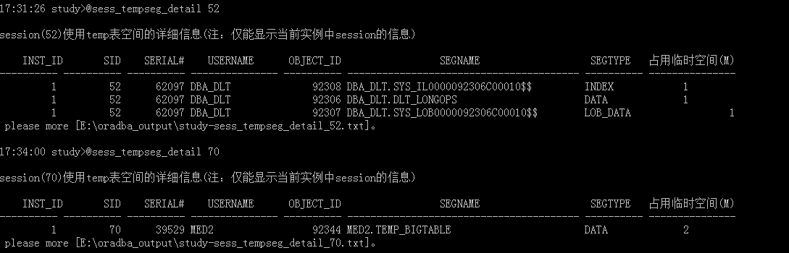
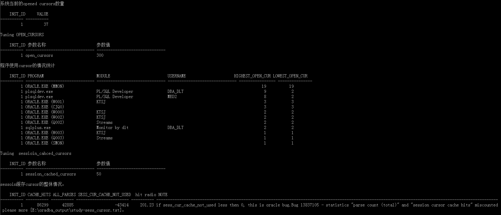

相关脚本
sess_blocklock.sql sess_cursor.sql sess_longops.sql sess_tempseg_detail.sql sess_info.sql sess_pga.sql sess_undo.sql sess_cpu.sql sess_longlock.sql sess_tempseg.sql
Lock在数据库中无处不在，监控当前数据库中Lock的运行情况，对发现问题、排除故障十分有用
以下脚本可以监控RAC环境下的Lock
sess_blocklock.sql脚本查看阻塞Lock信息
17:43:49 study>@sess_blocklock 正在生成阻塞锁信息，请稍等．．．

脚本自动用open_file_text配置的工具打开阻塞锁日志，该文件保存在script_output_dir配置的文件夹中

- 以树状格式展示lock的阻塞关系
LOCKKEY格式: INSTANCE_ID+SID+SERIAL#- 如果lock为
enq: TX - row lock contention字段REQUEST_DATA_QUERYSQL显示查询行锁数据的sqlselect * from MED2.OLT_DRUG_CATALOGUE where rowid='AAAWfZAAJAAAAFYAAA'
详细输出内容见：阻塞锁日志
sess_longlock.sql查看长时间占用资源的Lock，可以指定时长(单位秒)，默认60sUsage：@sess_longlock
20:05:47 study>@sess_longlock 请指定锁定的时间长(单位为秒，default 60s) Enter value for 1: 60 Specify [60] for lock time 正在生成长时间锁信息，请稍等．．．

Lock Time(s):Lock时长，单位秒
Transaction Time(s):事务时长，单位秒
Locked Object Info:Lock定对象信息 `
详细输出内容：长锁日志
在输出文件最后为释放Lock的操作指令：
INST_ID:Lock产生的数据库instace_id
KILL_SESSION:alter system kill session '62,56091';
Kill(Linux):kill -9 1844
Kill(Windows):orakill 62 1844
Cancel(Unix):kill -URG 1844 (仅取消sessoin当前执行的sql)
10237 Event:@cancel_sql 62 56091 (仅取消sessoin当前执行的sql)
sess_longops.sql获取数据库当前正在运行的慢SQL信息，按照工作量从高到底排序
17:43:00 study>@sess_longops 正在生成耗时SQL信息，请稍等．．．

详细输出内容：慢SQL日志
sess_pga.sql计算session使用PGA内存大大小，按照占用大小从高到低排序Usage：@sess_pga.sql
17:34:12 study>@sess_pga 10
当前session使用pga的情况(占用pga内存最多前10条数据)
INST_ID SID SERIAL# SPID PGA_USED_MEM PGA_ALLOC_MEM PGA_FREEABLE_MEM PGA_MAX_MEM STATUS SQL_ID
---------- ---------- ---------- ------------------------ ------------ ------------- ---------------- ----------- -------- ------------- -
1 12 26310 1640 7 21 13 21 ACTIVE
1 19 29226 528 3 13 10 15 ACTIVE cgtc5gb7c4g07
详细输出内容：session使用PGA日志
sess_undo.sql计算session占用undo空间的大小，按照占用大小从高到低排序Usage: @sess_undo
18:07:42 study>@sess_undo 10
当前事务使用UNDO表空间的情况(占用undo空间最多前10条数据)
INST_ID 表空间名称 回滚段名称 事物占用undo块数量 事物占用undo空间(M)
---------- -------------------- --------------------------- ------------------ ----------------
1 UNDOTBS1 _SYSSMU5_3484600714$ 12971 101.34
1 UNDOTBS1 _SYSSMU6_3822221795$ 363 2.84
open [E:\oradba_output\study-sess_undo.txt]...
详细输出内容：session占用undo空间大小日志
sess_cpu.sql获取使用cpu时间最多的session，按照使用大小从高到低排序Usage: @sess_cpu
16:11:55 study>@sess_cpu 10
session使用cpu的情况(使用cpu时间最多前10条数据)
INST_ID SID SERIAL# 使用CPU时间(秒) STATUS LOGON_TIME LAST_SQL_ID USERNAME PROGRAM
---------- ---------- ---------- --------------- -------- ------------------- ------------- ------------------------------ ----------------------
1 19 29226 136 ACTIVE 2017-06-13 16:59:11 fvkynu9xgck8h ORACLE.EXE (MMON)
1 70 39529 43 INACTIVE 2017-06-15 14:20:32 9m7787camwh4m MED2 plsqldev.exe
1 31 22802 8 ACTIVE 2017-06-13 16:59:44 fnq8p3fj3r5as ORACLE.EXE (CJQ0)
1 20 53415 6 ACTIVE 2017-06-13 16:59:11 bsa0wjtftg3uw ORACLE.EXE (MMNL)
1 9 29260 3 ACTIVE 2017-06-13 16:59:11 fvsbvgg3xnyn2 ORACLE.EXE (DBRM)
1 51 277 2 INACTIVE 2017-06-15 13:54:39 3nz260v5dwqnv DBA_DLT plsqldev.exe
1 46 23772 2 INACTIVE 2017-06-14 17:04:49 cf06fwacdmgfk MED2 plsqldev.exe
1 62 22225 1 INACTIVE 2017-06-15 17:00:56 9m7787camwh4m MED2 plsqldev.exe
详细输出内容：session使用cpu日志
sess_tempseg.sql计算session占用temp tablespace的大小，按照占用大小从高到低排序Usage: @sess_tempseg
17:27:11 study>@sess_tempseg 10
session使用temp表空间的情况(占用临时表空间最多前10条数据)
INST_ID TABLESPACE 占用临时空间(M) SID SERIAL# SQL_ID STATUS USERNAME PROGRAM MACHINE
---------- -------------------- --------------- ---------- ---------- ------------- -------- --------------- ------------------------------------------------ ---------------------------------------
1 TEMP 3 52 62097 cba6z16y1maqb ACTIVE DBA_DLT sqlplus.exe WORKGROUP\DENGLT-PC
1 TEMP 2 70 39529 9m7787camwh4m INACTIVE MED2 plsqldev.exe WORKGROUP\DENGLT-PC
注：这儿的sql_id可能并不是使用临时段的SQL.
please more [E:\oradba_output\study-sess_tempseg.txt]。
sess_tempseg_detail.sql获取指定sid(session id) session占用temp tablespacede信息Usage: @sess_tempseg_detail

sess_cursor.sql查看session使用cursor总体情况
17:33:59 study>@sess_cursor
系统当前的opened cursors数量
INST_ID VALUE
---------- ----------
1 37
Tuning OPEN_CURSORS
INST_ID 参数名称 参数值
---------- ------------------------------ ------------------------------
1 open_cursors 300
程序使用cursor的情况统计
.....
.....
详细输出内容：session使用cursor总体情况日志
sess_info.sql综合上面的监控，直接生成阻塞lock、操过60s的长lock、长操作SQL、占用undo前10、占用cpu前10、占用临时表空间前10等session信息。
相关脚本（脚本在文件夹event）
latch_child.sql latch_obj.sql se_hot_block.sql se_hw.sql se_noidle.sql se_wait.sql
se_noidle.sql:
18:29:19 study>@event/se_noidle
系统当前非空闲等待事件
INST_ID SID SERIAL# USERNAME STATE SQL_ID EVENT STATUS SEC_IN_WAIT P1 P2
---------- ------- ---------- ------------------------------ ------- ------------- ---------------------------------------- -------- ----------- ------------------------------ -------------------
1 67 18562 DBA_DLT WAITING gvhhm0q3n6n2k db file sequential read ACTIVE 0 file#= 7 block#= 6398
1 85 63 MED2 WAITING 8ua420838c000 db file sequential read ACTIVE 0 file#= 9 block#= 102660
1 76 30753 DBA_DLT WORKING 9wnakcpz3pbz4 On CPU / runqueue--SQL*Net message to ACTIVE 0 driver id= 0x0000000054435000 #bytes= 1
client
1 50 10999 MED2 WORKING 93vky9v64sc72 On CPU / runqueue--db file scattered ACTIVE 1 file#= 9 block#= 97536
read
please more [E:\oradba_output\study-se_noidle.txt]。
可以立马使用
@sql_info gvhhm0q3n6n2k分析等待事情执行的sql
11:30:39 study>@event/se_hot_block 当前系统中［latch: cache buffers chains］等待事件信息 Specify "latch: cache buffers chains" for 等待事件名称的关键字 查看进一步信息，请输入上面的latch address (0): Specify [0] for latch addr child latch的统计信息 Specify [0] for latch addr latch管理的内存中存储的数据内容 [status]说明： free - Not currently in use xcur - Exclusive scur - Shared current cr - Consistent read read - Being read from disk mrec - In media recovery mode irec - In instance recovery mode 仅有当前instance的数据 please more [E:\oradba_output\study-se_hot_block.txt]。
se_hot_block.sql会调用latch_child.sql获取child latch的统计信息，调用latch_obj.sql获取latch管理的数据对象。由于当前系统没有热点块等待，所以上面没有latch的输出
se_hw.sq:系统当前HW等待事件争用的对象信息
11:31:26 study>@event/se_hw 系统当前HW等待事件争用的对象信息 please more [E:\oradba_output\study-se_hw.txt]。
11:55:12 study>@event/se_wait 'cpu quantum'
Specify "cpu quantum" for 等待事件名称的关键字
INST_ID SID USERNAME STATE SQL_ID EVENT SEC_IN_WAIT P1 P2 P3
---------- ------- ------------------------------ ------- ------------- ---------------------------------------- ----------- ------------------------------ ------------------------------ ------------------------------ -------
1 44 WAITING 0shtmwrnbv2q1 Scheduler:resmgr:cpu quantum 3 location= 3 consumer group id= 17323 = 0
1 73 MED2 WORKING 7qncu1mqrfy4u On CPU / runqueue--resmgr:cpu quantum 6 location= 3 consumer group id= 17323 = 0
1 66 MED2 WORKING On CPU / runqueue--resmgr:cpu quantum 6 location= 3 consumer group id= 17323 = 0